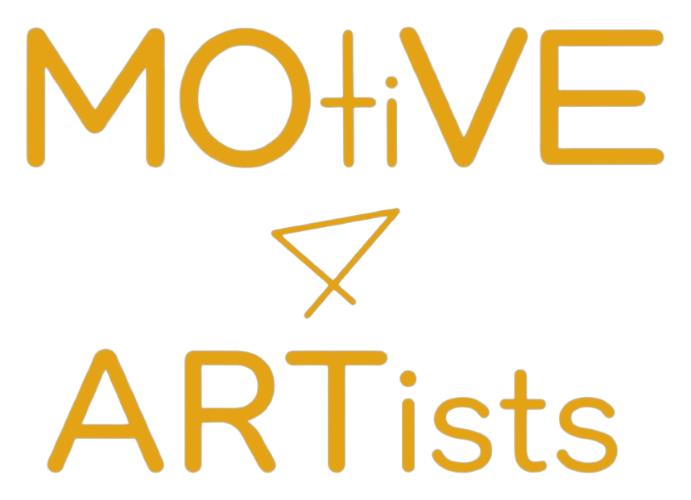
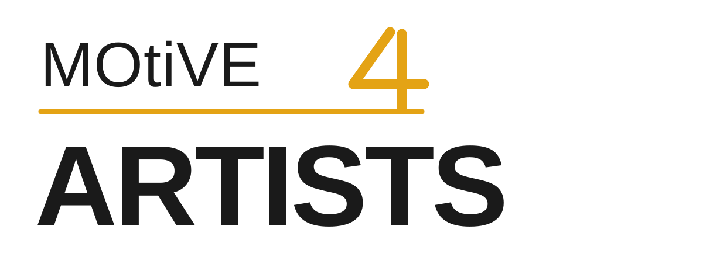
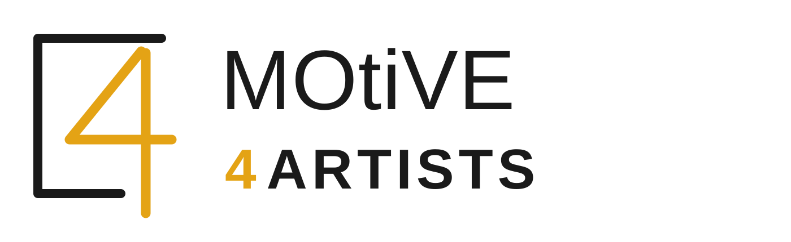
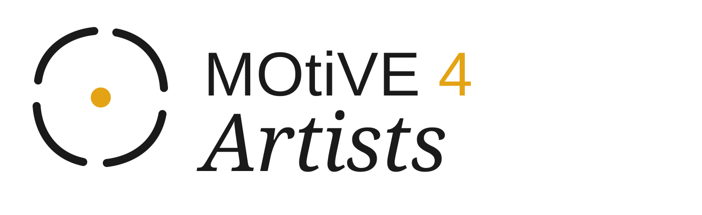
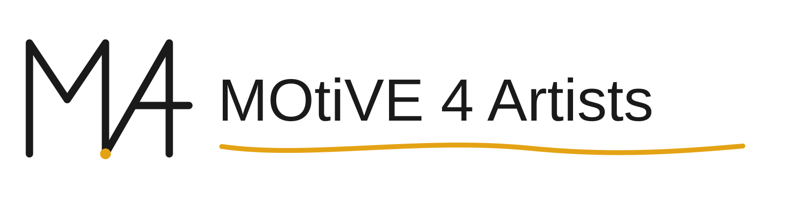
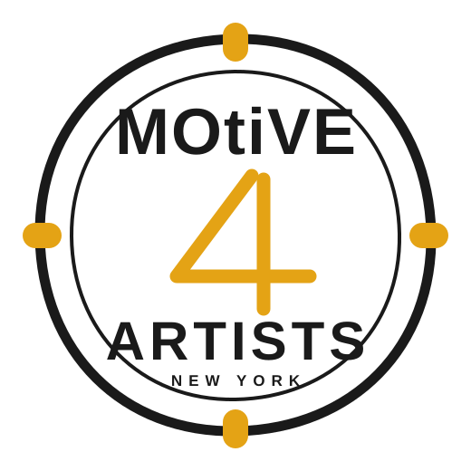

Board discussion / July 2026
This packet is for choosing a visual territory, not approving final production artwork. Each direction is intentionally different and drawn as an editable vector.
Creative brief
Movement-based artists come first. Funders, donors, partners, and applicants must also see a credible nonprofit that builds time, space, relationships, and opportunity around what each artist actually needs.
Warm, kinetic, human, grounded, and unconventional. More rehearsal room than gala. More relationship than institution. Confident without looking corporate or precious.
Website header, 16-32px favicon, social avatar, grant deck, one-color print, inexpensive signage, tote, and embroidery. The symbol and name must still work separately.

It preserves the sibling relationship and has a usable amber cue. The new round explores a clearer numeral, stronger small-size behavior, less vertical stacking, and a more ownable idea tied directly to artist-first support.
Direction 01
Typography-led wordmark

The brand promise becomes the hierarchy: ARTISTS is the first thing the eye sees. MOtiVE and the custom four identify who is doing the supporting work.
optional: the artist comes first.
Immediate, plainspoken, and highly reproducible. It does not ask the board or the public to decode a metaphor. It is the strongest direction for mission clarity.
The numeral can become a symbol, but this territory is primarily a wordmark. A final cut needs custom letter spacing and rights-cleared or fully drawn letterforms.
Direction 02
Combination mark / recommended

A program or room is built around the artist, but never closes around them. The four crosses the open edge: access, agency, and movement beyond the institution.
space and structure, kept open.
It has the clearest responsive system: full lockup, frame-and-four symbol, and numeral alone. Rounded geometry keeps a family resemblance without copying the current sail.
An architectural frame can drift toward real estate or construction if made too rigid. The final redraw should preserve the open, slightly human line quality.
Direction 03
Abstract symbol

Four open gestures gather around one amber point. They can stand for time, space, exchange, and counsel; the center remains the artist, not the organization.
support takes the shape the artist needs.
This is the most direct visual expression of tailored support. The human serif creates editorial warmth and clearly separates the nonprofit from a studio-rental identity.
Orbit and focus symbols are common. The arcs need a more proprietary hand-drawn rhythm in the next round so the mark does not resemble a loading indicator or camera reticle.
Direction 04
Gestural monogram

One rehearsal-like line forms M and 4, then continues as a shifting ground beneath the name. The mark feels drawn, practiced, and still in motion rather than perfected.
movement is a way of thinking.
It connects directly to movement practice and the hand-painted studio origin. The monoline construction is inexpensive to print, cut, animate, and embroider.
M4 is a crowded commercial abbreviation. The monogram would require a careful visual and trademark search, and its custom gesture must carry more identity than the letters.
Direction 05
Emblem

A slightly irregular civic seal for a young organization doing serious work. Four amber notches hold the structure while the oversized four keeps it from becoming formal.
made in New York, built for artists.
Excellent on programs, certificates, tote bags, stamps, and partner materials. It gives funders an immediate signal of permanence and organizational confidence.
A seal can make the institution feel more important than the artist. It also needs a simplified core mark below 48px and should never imply a government endorsement.
Evaluation
Initial working scores use a 1-5 scale. They are a discussion starter, not a substitute for artist feedback or legal clearance.
Advance Open Room as the lead direction. Carry Artists First and Built Around the Artist into a second round so the board can compare clarity, symbol strength, and warmth after custom lettering and artist testing.
Exact font, final spacing, shade of amber, tagline placement, or detailed production lockups. Those are refinements after the board chooses one or two concepts.
Board discussion
Ask which direction best represents the organization artists should experience three years from now, not which image matches anyone's personal taste today.
Give everyone two minutes with the five marks. Each person notes the first concept they remember without reopening the packet.
Independently score distinctiveness, artist-first fit, small-size use, family continuity, reproduction, and funder credibility.
For the top three, complete the sentence: "This direction gains ___, but risks ___." Avoid "I just like it" as the deciding argument.
Advance no more than two territories for custom vector refinement, artist interviews, real-world mockups, and preliminary visual clearance.
Redraw the two finalists with custom letterforms; test at 16, 24, and 32px; apply them to the website header, social avatar, grant cover, tote, and one-color print; ask 5-8 artists what each mark communicates before revealing the rationale; then conduct federal and broader visual-mark clearance before launch.
Concept status: exploratory vector artwork. No concept has been trademark-cleared or production-outlined. Existing brand assets remain unchanged.
09